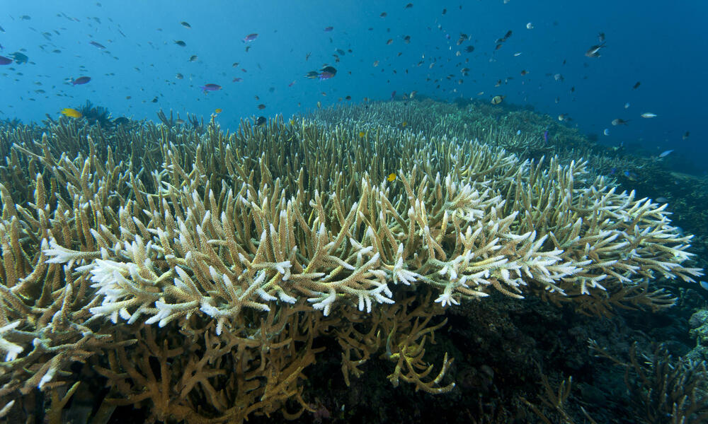

Coral and algae are in a symbiotic relationship. What this means is that these two organisms are in a mutually beneficial relationship, and they are both gaining from being in each other’s vicinity. Corals emit their waste product in the form of ammonium, and the algae take it up as a nutrient. In return, the algae undergo photosynthesis, in which they emit and pass their nutrients back to the coral. This positive relationship between the algae can only continue when the coral and algae are under non-stressful conditions. Recently, global warming and other conditions brought on by climate change have created a stressful environment for the coral. One example is the SST or Sea Surface Temperature in the sea, which has been on the rise and has caused the coral to expel the algae living on them. This act is considered coral bleaching.
We will analyze a dataset covering the extent of coral bleaching, and the factors that affect it. A majority of this dataset was taken during the 2015-2017 El Nino period in which increased thermal stress was linked to coral bleaching.
Bleaching and environmental data for global coral reef sites from 1980-2020
The Global Bleaching and Environmental Data (version two) is a dataset that includes information on indicators of coral bleaching, such as percent bleaching and sea surface temperature anomalies (SSTA), at various sites in the Pacific, Atlantic, and Indian Oceans from 1980-2020. The data were collected from seven coral bleaching studies and databases by researchers at the Florida Institute of Technology and the University of California-Santa Barbara in 2022. Researchers converted all site coordinates to decimal degrees and compared them to ensure there were no duplicates. Coordinates located on land or more than one kilometer away from a coral reef were discarded. We downloaded the cleaned dataset from the Biological and Chemical Oceanography Data Management Office and analyzed the following variables: percent bleaching, temperature, distance to shore, turbidity, and cyclone frequency.
Visit our GitHub to check out what we found.
Don’t hesitate to email us! We believe that coral bleaching is an urgent matter and would love to discuss with you!